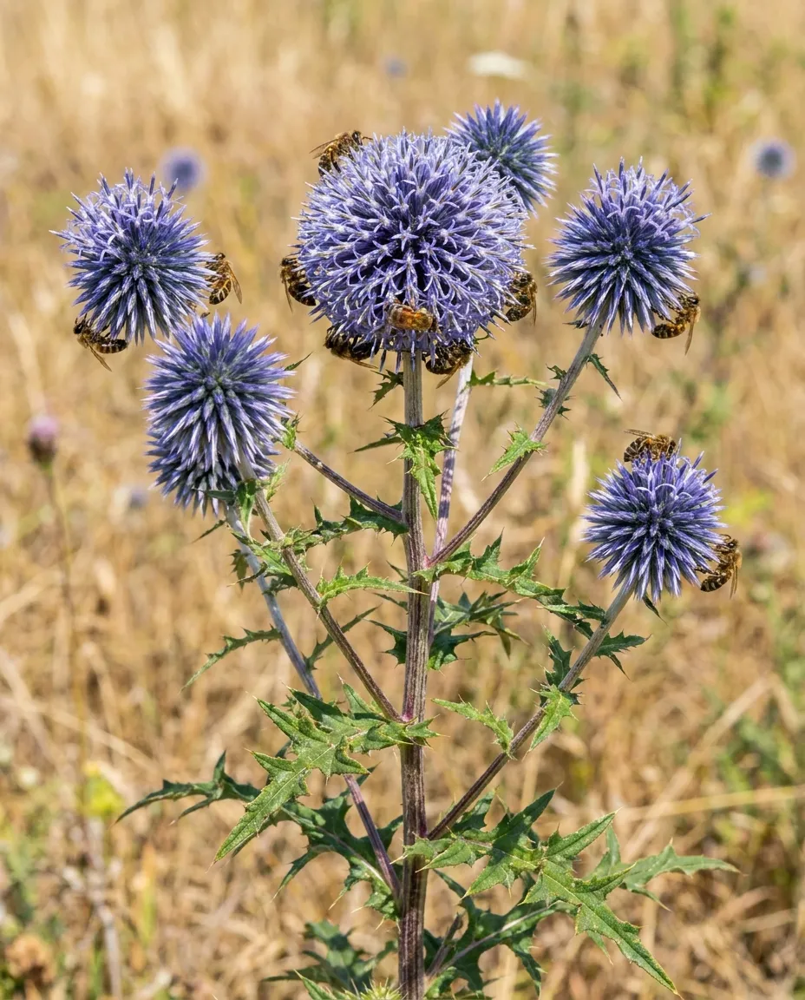
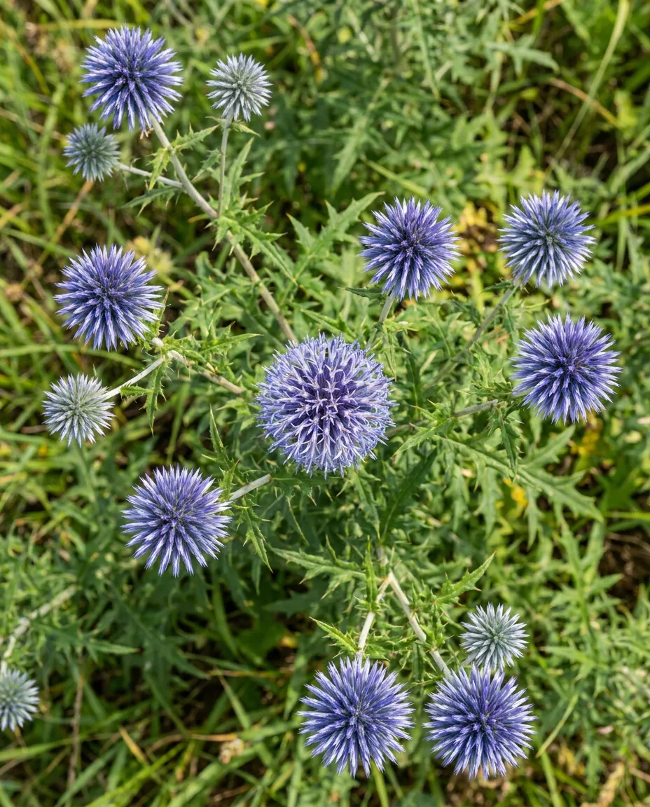

МОРДОВНИК ШАРОГОЛОВЫЙ
Мордовник шароголовый — многолетнее растение рода Мордовник семейства Астровые. Это абсолютный лидер среди дикорастущих и культурных медоносов умеренных широт. По уровню выделения нектара в условиях Средней полосы России он конкурирует только с липой, а среди травянистых многолетников ему практически нет равных. Пасечники называют его «королём медоносов» за фантастическую продуктивность, стабильность и неприхотливость.
Мордовник обладает колоссальным медовым потенциалом. В среднем с 1 гектара сплошных зарослей пчёлы могут собрать до 1200 кг мёда. Цветёт в самый разгар лета — с середины июля до середины августа, около 30–35 дней. Это позволяет ему обеспечивать пчёл мощным главным взятком. В отличие от большинства растений, мордовник выделяет нектар в течение всего светового дня. Пчёлы работают на нём с раннего утра и до позднего вечера, даже в сумерках.
Растение имеет мощнейший стержневой корень, уходящий глубоко в землю. Благодаря этому мордовник продолжает обильно выделять нектар даже в сильную засуху и жару выше +30 °C, когда другие медоносы полностью выгорают.

Направления селекции
- Скороспелость
- Технологичность посевных качеств семян
- Увеличение нектаропродуктивности
- Пригодность к механизированной уборке
- Устойчивость к осыпанию
- Устойчивость к полеганию
